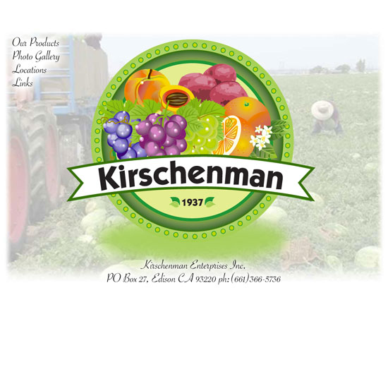
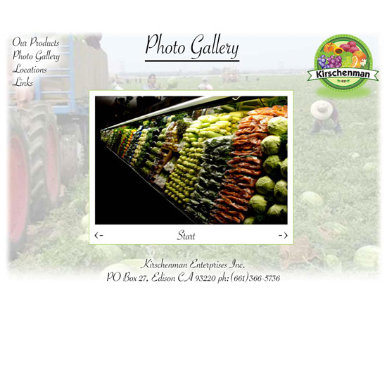
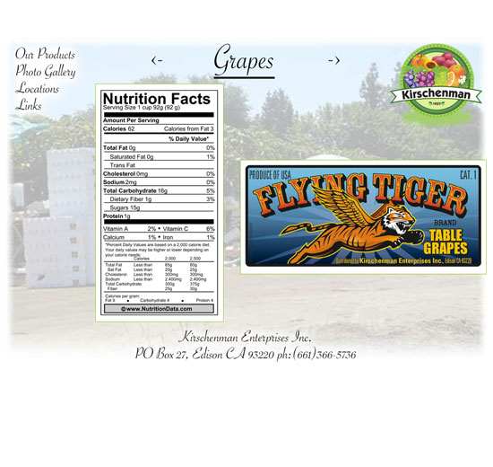
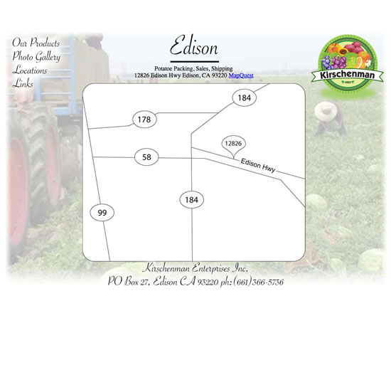
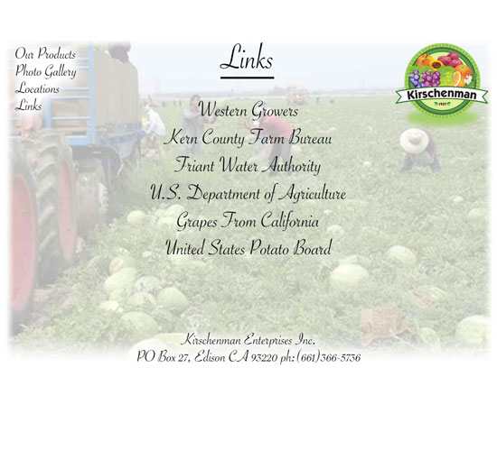

		<!-- START PROJECT -->
		<section id="project-page">
			<div class="container">
				<div class="row">
					<div class="col-md-6">
                        <div class="flexslider">
						 	<ul class="slides">
						    	<li></li>
							    <li></li>
							    <li></li>
                                <li></li>
                                <li></li>
						  	</ul>
						</div><!-- END FLEXSLIDER -->
					</div><!-- END COLUMN 12 -->
					<div class="col-md-6 project-info"> 
                        <h3 class="project-title">Kieschenman.com</h3>
                        <h4 class="project-subtitle">Kierschenman Farms</h4>
						<p>I created this web site for Kieschenman Farms in 2009. The site was designed as a media page to give a company profile and location of their many farms, as well as product discription.</p>
						<p>This project was under direction of the CEO of Kieschenman Farms</p>
						<ul class="project-details">
							<li><span>Categories</span> web design - ui design</li>
                            <li><span>Company</span> Ancient Goose Network</li>
						</ul>
						<a href="http://www.kirschenman.com/" class="button-border-white">View Online</a>
					</div><!-- END COLUMN 12 -->				
				</div><!-- END ROW -->
			</div><!-- END CONTAINER -->
		</section>
		<!-- END PROJECT PAGE SECTION -->

